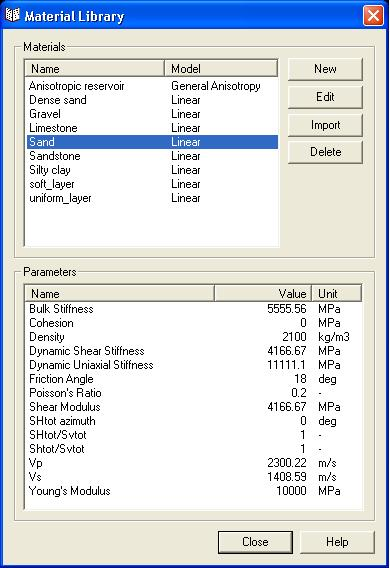

The material library is the centralized location where material models with material properties can be imported, created, viewed and edited. Materials can also be added to or imported from the material library to allow a database of material properties to be maintained.
There is a Geomec model-specific library stored in/with the GMP file (under Data Storage) and external libraries (with extension GML). GML files can be addressed by GMP files. It allows the central storage of material models (for various Geomec, Fist, Stabor runs), but also easier transport of material properties between GMP files.
The internal material library is entered by right-clicking "Rock material" in the Data Storage area (or an existing material attributed to a formation) and left-clicking "Attributes".
The main screen of the material library contains a list of all materials available in the material library. In this list, a single material can be selected. The values of the material parameters are then shown in the lower list on the main screen. Clicking the same material name a second time in the top list allows you to rename the material.

A new material can be created by pressing the New button. A small dialog will appear requesting the name of the new material and then a larger dialog will be displayed in which the material (constitutive) model has to be selected. Default values of parameters will be attributed, which require an update. The associated parameters (i) can be selected and changed manually or (ii) can be fitted to stress-strain curves of laboratory experiments. The latter is not possible for anisotropic, salt creep and hardening Mohr-Coulomb.
Since the Material Library is a plug-in (shared program with for instance Stabor), the Help on fitting experiments needs to be addressed via the Help-button when viewing the Material Library.
Apply the Save button after editing (or "Save as" to create a material with a different name).
Material properties (and model) can be edited by pressing the Edit button. One can change the constitutive model (note that shared values, like Young's Modulus will be kept in place) or change parameters. "Save" will overwrite the existing model. "Save as" will create a new material model.
Materials can be deleted from the internal or external material libraries by pressing the Delete button. When deleting from an internal library (the Data Storage area) they disappear from the formations, if applied. A new material model should be dragged to the formation in that case, prior to running the model once more.
Materials can be imported from a separate material library (GML file) by right-clicking "From material Library", selecting a single material and pressing the Select button. One needs to import the materials one-by-one. Retyping the parameter values might be quicker.
Geomec uses the Material Library that was last addressed on the computer, which can be confusing. The "Material Library" files do not show their file name in the input screen. If you need to address a certain Library it is best to right-click on "Rock Material" and choose "Select Library". Next browse to the correct folder and name of the library. The library will now be default until another one is selected.
To copy material data from one (external) library to another (external) library, press the Import button, select one (or more) materials and click the "Select" button. Here it is possible to select multiple materials.
Right-clicking on a specific material in the Data Storage area allows the user to copy the material to the default external library.
Geomec uses the Material Library that was last addressed on the computer which can be confusing. If you need to address a certain Library it is best to right-click on "Rock Material" and choose "Select Library". Next browse to the correct folder and name of the library before saving material models to the library.
For background on constitutive (material) models and parameter determination see: material models.